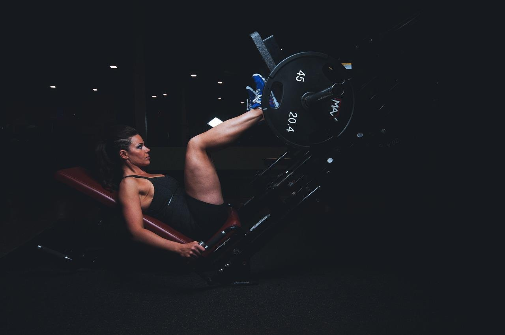

Fitness & Virtual Reality
Qui sommes nous?
Nous sommes une plateforme dédiée au bien être et qui s’adresse aux personnes
n'ayant pas le temps de se rendre dans une salle de sport, ou pour ceux qui souhaitent
être coaché et accompagné tout au long de leur training.

Comment ca fonctionne
Pour utiliser la plateforme virtuelle, vous aurez besoin du casque virtuel FVR
connecté. Une fois que vous aurez sélectionné l’entrainement dans la salle de votre
choix et lors de votre première connection, l’application vous demandera d’entrer
vos données métaboliques afin de suivre votre progression.
Evenements à venir
Retrouvez ici les informations et mises à jour à ne pas manquer